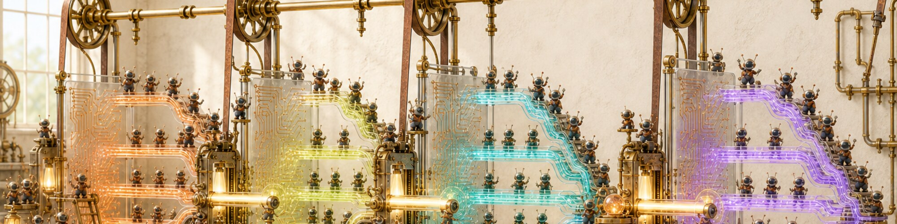
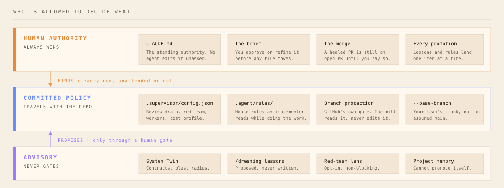
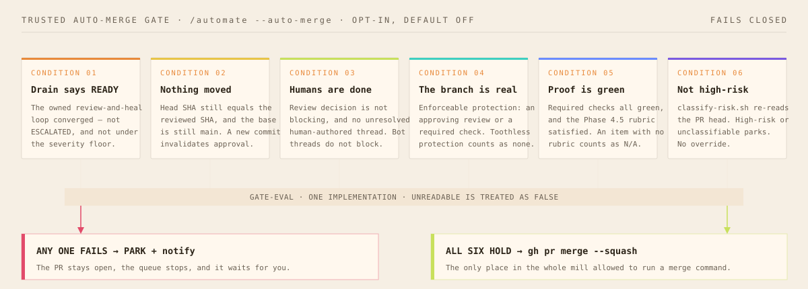

Install Loomwright
Use the app you actually type in. Open the install steps. Do not paste /plugin into zsh — that is a chat command, not a file path.

An out-of-the-box mill that weaves a raw goal into a reviewed pull request. Plan first. Work in parallel. A human still merges.
Launch Pad turns a messy goal into a reviewed brief — feasibility, file impact, subtasks — before Supervisor touches the repo.
Workers run in git worktrees. Overlapping files wait. Merges are ordered. You do not get a pile of conflicting branches.
Code review, optional red-team, dual-agent QA, and a self-heal pass on the PR. Loomwright never auto-merges unless you opt in on a trusted path.
Lessons, house rules, and the System Twin are advisory and human-gated. CLAUDE.md stays the authority. Memory cannot promote itself.
Use the app you actually type in. Open the install steps. Do not paste /plugin into zsh — that is a chat command, not a file path.
/setup is a dashboard, not a wizard that overwrites you. Check observability, notifications, Twin, Beads, then turn on only what you want.
/setup
One new goal: /autonomous. An existing PR: /review-pr. A pile of stories: /automate. Do not start all three at once.
/autonomous "add a daily challenge that resets at midnight UTC"
This is foreground-assisted, not fire-and-forget. Save or refine the brief. Answer rubric gates. Desktop banners fire when the mill needs you.
A healed PR is still an open PR. Read the diff. Merge it. Then run /dreaming after a week so the mill keeps the lessons you actually want.
/review-pr https://github.com/you/repo/pull/42 # bounded review → fix → re-review. Never merges.
Recommended first play
Use /autonomous when you have one requirement and you want Launch Pad + Supervisor chained, with stacked PRs if it takes more than one pass.
/autonomous "players can retry a daily challenge without losing the streak"
Highly recommended once the first PR lands. These are the plays that make Loomwright more than a task runner.
Overnight a queue
Turn a prompt, a folder of stories, or a backlog doc into a queue. Each item runs autonomous → review drain. Auto-merge stays off unless you pass a trusted gate.
Attack the merge
Adversarial pass on auth, payments, migrations, hooks, and agent prompts. Advisory. It finds the failure class before production does.
Test like a team
Risk map first, then Playwright generation with a debate loop. Use this on anything a user can click — not on a one-line typo fix.
Write the problem
Messy idea in, stories with acceptance criteria out. Add --brainstorm when the team is arguing and you need five expert lenses to fight it out.
Compound the craft
Distill session logs into lessons you accept one by one. Encode house rules so workers read them while doing the work, not only on review.
Inherit the mill
Two-minute catch-up for a teammate. A local scoreboard of heal rate, Twin growth, and whether last week actually got better.
See the blast radius
Per-subsystem contracts, hash-chained provenance, blast-radius at plan time. Advisory today. The north star is a mill that already knows this repo.
Keep the graph
One-way projection of runs, Twin contracts, and lessons into a vault you own. Nothing leaves the machine. The vault never becomes the engine.

One person can hold a mill in their head. Four cannot. So the settings that matter are committed, the dangerous ones are off, and the ones that cost money are a flag you passed on purpose.

Flags live in one person’s shell history. .supervisor/config.json is committed, reviewed, and applies to every run in the repo, including the unattended ones. Toggle the knobs to build yours.
Commit this · .supervisor/config.json
{}
Pass this · per run
/autonomous "…"
Every other surface — /supervisor, /review-pr, the heal loop — terminates with the PR still open. Auto-merge exists in exactly one place, is off unless you pass --auto-merge, and needs all five of these to hold. Anything it cannot read counts as a failure.

The usual first question from anyone who has to sign off on this. The mill reads your repo, your history, and your logs from where they already are. Three things can go outward, and all three are off until someone turns them on.
![Boundary diagram. Staying local: session logs and supervisor state, project memory and System Twin, the insights dashboard, the Obsidian vault, and the Langfuse and OTel observability stack running in Docker on your machine. Crossing by default: branches, commits and pull requests to your own git remote, and prompts to Claude exactly as any Claude Code session sends them. Opt-in only: GitHub-issue telemetry, gate webhooks to a URL you set, and version-controlling memory stores behind a consent step.](assets/data-boundary.svg)
Do not hand a team /automate --auto-merge in week one. Earn each rung.
Prove it on your own branch
Run /setup, then one /autonomous on real but unglamorous work. Sit through every gate. You are calibrating how good the brief has to be, not measuring throughput.
Commit the policy
Seed /rules so a worker reads your conventions while writing, not after review catches them. Commit .supervisor/config.json. Set the real --base-branch. Now a second person gets your setup by cloning.
Make the trunk defensible
Turn on branch protection with a required check. Turn on red_team_high_risk if you touch auth, money, or migrations. Run /insights weekly and /pr-postmortem on the PRs that took four review rounds.
And only where it is boring
/automate on a backlog, parked at the gate for a human. Add --auto-merge only on a path where a wrong merge is cheap to revert: dependency bumps, copy changes, generated files. Never on the surface you would not let a new hire merge alone.
A mill nobody inspects turns into a mill nobody trusts. These four are the operating loop.
Weekly · is it getting better
Local scoreboard: heal rate, review rounds, where sessions burn time. Rendered from your own logs, on your own machine. If the trend is flat, the brief is usually the problem, not the model.
When a PR churns
Sorts every review round into a root cause and attributes it to a stage. Four rounds of the same nit means a missing house rule, not a bad reviewer.
When someone new arrives
Decision, why, what was tried and rejected, current state, provenance, each with its own freshness. Two minutes to inherit context that would otherwise live in one person’s head.
Monthly · keep what worked
Distil sessions into proposed lessons and harvested conventions, delivered as a pull request your team reviews like any other. Accept item by item. Nothing writes itself in.
Shipped
Plan-first Launch Pad, parallel Supervisor, review-and-heal, stacked autonomous loops, automate queues, advisory Twin, dreaming, insights, house rules. You still merge.
In the warp
Run the software in the heal pass. Playwright for web apps. Headless loops against a corpus. A hard pass/fail — not a vibes score — before anything is allowed to gate.
Evidence-gated
Flip advisory conformance to a real gate only after the benchmark has caught real regressions without a false-positive habit. No calendar flip.
Four guardrails first
A watcher that can open PRs unprompted — cadence expiry, per-run budget, circuit-breaker, heartbeat. Not started. Highest-risk rung. Intentionally last.
Director model
You set intent and approve outcomes. Diff-review becomes optional because the mill already proved the behavior. Everyone else rents a coder who starts cold every morning.
Source: github.com/vikashruhilgit/loomwright · marketplace id atelier · plugin id loomwright
Loomwright is a Claude Code plugin. Pick the surface you type in. You need a git repo. You need gh authenticated if you want the mill to open pull requests.
macOS, Linux, WSL — Terminal
Use this when you type in Terminal, iTerm, Ghostty, or Cursor’s terminal panel. claude is a shell command. /plugin is not.
which claude prints nothing. Reopen the terminal after install so PATH updates.loomwright@atelier.claude plugin list. You should see loomwright from marketplace atelier.cd into a git repo, then start a session with claude. If slash commands are missing, type /reload-plugins in that session.claude plugin marketplace add vikashruhilgit/loomwright claude plugin install loomwright@atelier
After it lands, open the git repo you want to ship in, then:
/setup /autonomous "the next thing your users can feel"